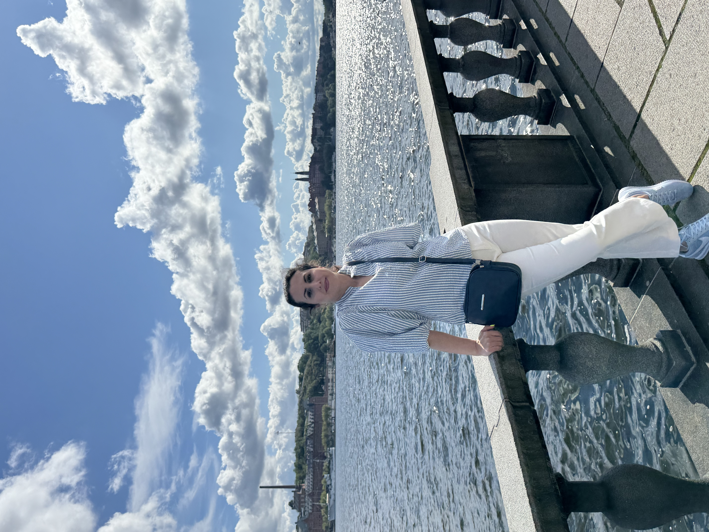

Jag lever min dröm genom att arbeta på fritids som konstnär och älskar att fånga världens skönhet i en realistisk stil.
Drivkraften kommer från ett brinnande intresse och en stark passion, jag har på egen hand tillägnat mig de flesta kunskaper inom måleriets konst.
Min inspiration hämtar jag från naturen och de miljöer som omger mig.
Jag föredrar att arbeta i större format för att betraktaren helt ska kunna dras in i kompositionen. De små, intrikata detaljerna skapar liv i målningen, och jag strävar alltid efter en hög nivå av realism.
Penseldrag, färgnyanser och texturer förfinas omsorgsfullt för att skapa en upplevelse som är både raffinerad och visuellt fängslande.